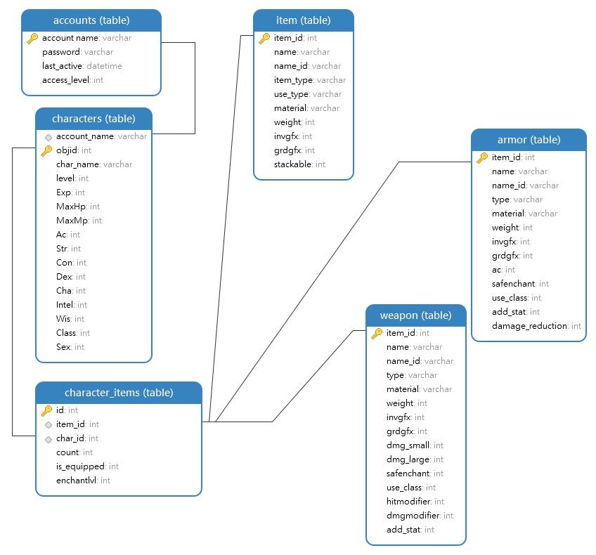
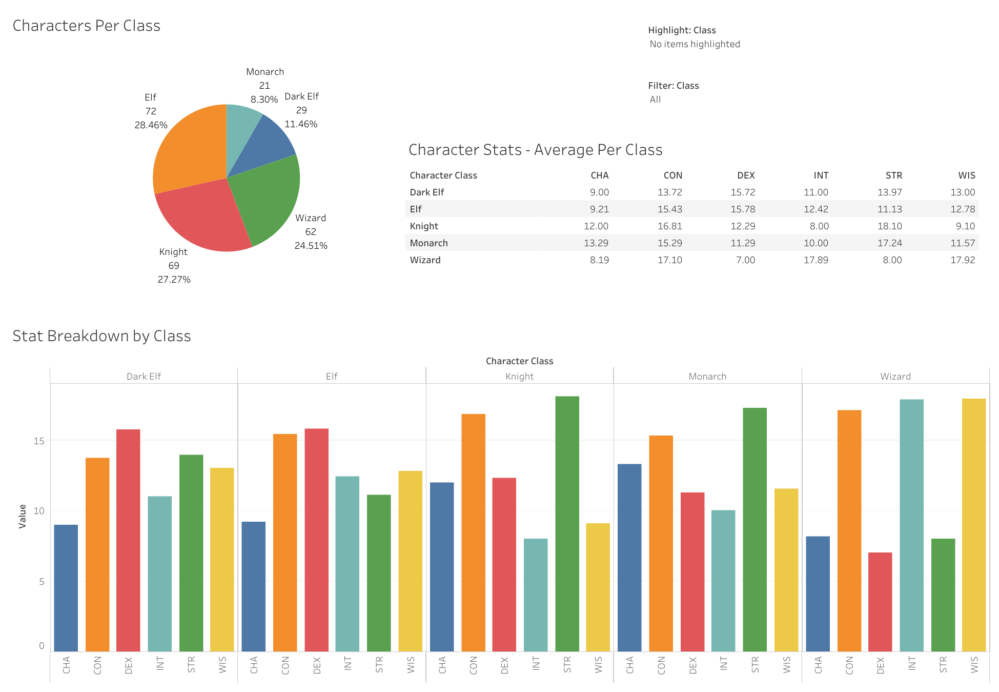

Video Game Database Analysis
SQL and Tableua for accessing, cleaning, and analyzing data.
Tableau visualization can be found here.
Background
Massively Multiplayer Online Role Playing Games (MMORPGs) have extensive databases encompassing different aspects of the game. I was fortunate to find and form multiple different teams over the years to work on a game for learning and fun. The projects utilized Java and MySQL for development and storage.
What does this have to do with data analysis?For this project, I decided to choose data that was exciting to me and unique.
One can only endure so many COVID data projects.
The database I used is from an early version of the game.
I had never thought about how maintaining a video game database and getting feedback to make informed decisions involved a similar skill set to data analytics.
Objectives
- 1. Analyze the data set to determine avenues for gameplay balance and improvement.
- 2. Determine which aspects of the data can be routinely surveyed to ensure proper operations.
Preparation
What do we have?
I connected to a local MySQL database that I had used for testing. My weapon of choice was Navicat,
by PremiumSoft CyberTech - a SQL database management and development system.
Understanding the data is vital to the process.
Data modeling is a way to organize and connect data for effective analysis.
The pieces fit together like a puzzle to see the bigger picture.
Models can help to make sense of the information in a system.
This makes it easier to retrieve and filter out the data necessary for a business objective.
Data modeling can be used to document data requirements for applications prior to development or
extract from an existing system to better understand the structure of existing relationships.
Explaining the Model
Nice to know: I felt it was necessary to include a description of the data for better understanding.Each player creates an account that hosts their characters.
Characters in the game can be 1 of 5 classes:
- Monarch
- Knight
- Wizard
- Elf
- Dark Elf
- (STR) Strength
- (CON) Constitution
- (DEX) Dexterity
- (CHA) Charisma
- (INT) Intelligence
- (WIS) Wisdom
- armor (helmets, boots, gloves...)
- weapon (swords, bows, daggers...)
- other (etcitems - potions, arrows, currency...)
I created a simplified data model of the relationship between 6 of them as a visual explanation.

What can be done with this data?
I came up with a few questions to answer.
Gameplay Experience Improvement
- What types of characters do people have?
- Are there any underutilized classes that can be improved?
- What stats do they have?
- Are any stats lacking in usefulness that can be improved?
- What weapons are they using?
- Which areas need more diverse choices?
- What enchant level are weapons?
- What do players consider worth spending extra money to improve?
- Is more variety necessary?
Routine Checks
- Do all bosses in the spawnlist exist in the monster list?
- Was a boss added that does not have corresponding monster data?
- Do all items in shops exist in the items tables?
- Was an item added to shops that does not have corresponding item data?
- How much money do characters have?
- Is there an excess of currency?
- Are there any extreme outliers that need explanation?
Digging In
How can we get the information needed?First, how many characters are availble for the analysis?
-- How many characters are there?
SELECT
COUNT(*)
FROM
characters
Result: 401 characters
Exploring the data reveals that some characters were recently made and administrator characters show in the results. Those can be filtered out with a WHERE clause.
-- How many characters are there?
-- Exclude admin and low level characters
SELECT
COUNT(*)
FROM
characters
WHERE
AccessLevel = 0 AND level > 10
Result: 253 characters
Saving this subset to a temporary table makes it readily available for the remaining queries.
-- Temporary Table to only show relevant characters in future queries
CREATE TEMPORARY TABLE temp_characters AS
SELECT *
FROM
characters
WHERE
AccessLevel = 0 AND level > 10;
-- Count records to verify results
SELECT
COUNT(*)
FROM
temp_characters
Gameplay Experience Improvement
Now we can look at a breakdown of class distribution throughout the characters. The numerical values in 'Class' are used to determine the type. A CASE expression can be used to create these categories.
-- What class do most players use?
-- Building query to determine class from numerical data
SELECT
char_name,
CASE
WHEN Class = 0 OR Class = 1 THEN 'Monarch'
WHEN Class = 61 OR Class = 48 THEN 'Knight'
WHEN Class = 734 OR Class = 1186 THEN 'Wizard'
WHEN Class = 138 OR Class = 37 THEN 'Elf'
WHEN Class = 2786 OR Class = 2796 THEN 'Dark Elf'
ELSE 'Invalid Class'
END AS
characterClass
FROM
temp_characters
ORDER BY
characterClass
Result: No Invalid Classes
This shows all characters and corresponding classes. Validation of the process throughout is important to ensure the results are accurate. Now to determine how many of each class are in use.
-- Count the characters in each class
-- Using the previous CASE expression as a sub-query
SELECT
characterClass,
COUNT(characterClass) AS characterCount
FROM(
SELECT
CASE
WHEN Class = 0 OR Class = 1 THEN 'Monarch'
WHEN Class = 61 OR Class = 48 THEN 'Knight'
WHEN Class = 734 OR Class = 1186 THEN 'Wizard'
WHEN Class = 138 OR Class = 37 THEN 'Elf'
WHEN Class = 2786 OR Class = 2796 THEN 'Dark Elf'
ELSE 'Invalid Class'
END AS
characterClass
FROM
temp_characters
) AS classes -- this alias is not used, but defining one is required
GROUP BY
characterClass
ORDER BY
characterClass
Result: Dark Elf - 29, Elf - 72, Knight - 69,
Monarch - 21, Wizard - 62; Total: 253
Checking this data as a percentage of the total:
-- What percentage of characters exist in each class?
-- Add percentage column: dividing count by total characters
SELECT
characterClass,
COUNT(characterClass) AS characterCount,
(COUNT(characterClass) / 253) * 100 AS percentage
FROM(
SELECT
CASE
WHEN Class = 0 OR Class = 1 THEN 'Monarch'
WHEN Class = 61 OR Class = 48 THEN 'Knight'
WHEN Class = 734 OR Class = 1186 THEN 'Wizard'
WHEN Class = 138 OR Class = 37 THEN 'Elf'
WHEN Class = 2786 OR Class = 2796 THEN 'Dark Elf'
ELSE 'Invalid Class'
END AS
characterClass
FROM
temp_characters
) AS classes -- this alias is not used, but defining one is required
GROUP BY
characterClass
ORDER BY
characterClass
Result: Dark Elf - 11.46%, Elf - 28.46%, Knight - 27.27%,
Monarch - 8.30%, Wizard - 24.51%; Total: 100%
More balance is necessary to make Monarch and Dark Elf viable.
Checking which stats characters use most:
-- What stats do each class use?
-- Average of each stat for each class
SELECT
-- Differentiate characters by class
CASE
WHEN Class = 0 OR Class = 1 THEN 'Monarch'
WHEN Class = 61 OR Class = 48 THEN 'Knight'
WHEN Class = 734 OR Class = 1186 THEN 'Wizard'
WHEN Class = 138 OR Class = 37 THEN 'Elf'
WHEN Class = 2786 OR Class = 2796 THEN 'Dark Elf'
ELSE 'Invalid Class'
END AS
characterClass,
-- Average of each stat
AVG(Str), AVG(Con), AVG(Dex),
AVG(Cha), AVG(Intel), AVG(Wis)
FROM
temp_characters
GROUP BY
characterClass
ORDER BY
characterClass
Each class has 1-2 stats that can have bonuses applied to make them a more effective choice.
Checking which weapons characters use most:
-- What weapon do characters use?
-- Get item name from character_items table
SELECT
item_name,
COUNT(*) as total
FROM
character_items
WHERE
-- Verify the item is being used (equipped)
is_equipped = 1 AND
-- Verify the item is a weapon***
item_id IN(
SELECT
item_id
FROM
weapon
) AND
-- Verify character is from temp_characters***
char_id IN(
SELECT
objid
FROM
temp_characters
)
GROUP BY
item_name
ORDER BY
total DESC
While this is a singular snapshot - a large number of players have beginner items. Incentive to upgrade can be accomplished by reducing usefulness of beginner items or raising effectiveness of obtainable alternatives.
*** JOIN statments can be used to verify the character being a part of the temp_characters subset and that the item in question is a weapon. This increases the efficiency of the query.
-- What weapon do characters use?
-- Utilizing JOINs this time
-- Get item name from character_items table
SELECT
item_name,
COUNT(*) as total
FROM
character_items
JOIN
-- Foreign Key of items table linked to character
temp_characters ON
character_items.char_id = temp_characters.objid
JOIN
-- Foreign Key of weapon table linked to character_items
weapon ON
character_items.item_id = weapon.item_id
WHERE
-- Verify the item is being used (equipped)
is_equipped = 1
GROUP BY
item_name
ORDER BY
total DESC
Now that we've looked at what weapons characters are using, we can check which weapons players enchant (improve) most often. Which weapons are worthwhile?
-- What enchant level of weapon do players have?
-- What weapons do players find are worth enchanting (improving) and to what degree?
-- List Items by Class and Enchant Level
SELECT
temp_characters.char_name,
-- Differentiate characters by class
CASE
WHEN Class = 0 OR Class = 1 THEN 'Monarch'
WHEN Class = 61 OR Class = 48 THEN 'Knight'
WHEN Class = 734 OR Class = 1186 THEN 'Wizard'
WHEN Class = 138 OR Class = 37 THEN 'Elf'
WHEN Class = 2786 OR Class = 2796 THEN 'Dark Elf'
ELSE 'Invalid Class'
END AS
characterClass,
character_items.item_name,
character_items.enchantlvl
FROM
character_items
JOIN
-- Foreign Key of items table linked to character
temp_characters ON
character_items.char_id = temp_characters.objid
WHERE
-- Verify the item is a weapon
item_id IN(
SELECT
item_id
FROM
weapon
)
ORDER BY
characterClass,
character_items.enchantlvl DESC
A large amount of Wizard class characters use the same weapon and enchant them often.
This means more variety of useful weapons is necessary for this class.
Routine Checks
Non-Player Characters (NPCs) are any characters in a game that are not controlled by a player. These may be friendly (shop keepers) or hostile (monsters). Over time, new NPCs are added by administrators. Verification of proper data loading ensures smooth operation of the game.Monsters and Bosses added have requirements in multiple tables.
This check verfies the correct information exists for bosses.
-- Do all bosses in the spawnlist exist in the monster list?
SELECT DISTINCT
npc_id
FROM
spawnlist_boss
WHERE
npc_id
NOT IN (
SELECT
npc.npcid
FROM
npc
)
Inexperienced admins tend to add bosses without filling data in everywhere it is required or enter invalid data.
Shops are utilized to buy and sell items. Like the monster data, shops require proper structure to be added correctly. This check verfies that shop data contains valid item data.
-- Are items sold in shops valid, existing items?
SELECT *
FROM
shop
LEFT JOIN
-- Compare to etcitem table
etcitem ON
shop.item_id = etcitem.item_id
LEFT JOIN
-- Compare to armor table
armor ON
shop.item_id = armor.item_id
LEFT JOIN
-- Compare to weapon table
weapon ON
shop.item_id = weapon.item_id
WHERE
-- If NULL in all 3 places,
-- an invalid item is being sold in shops
etcitem.item_id IS NULL AND
armor.item_id IS NULL AND
weapon.item_id IS NULL
Again, inexperienced admins tend to add items to shops without filling data in everywhere it is needed or enter invalid data.
Lastly, it is important to keep an eye on currency data.
Balancing the game's economy requires proper distribution and accumulation rates of wealth.
This check displays the current wealth in currency of each player.
-- How much money do characters have?
SELECT
temp_characters.char_name,
character_items.count AS currency
FROM
temp_characters
INNER JOIN
character_items ON
temp_characters.objid = character_items.char_id
WHERE
item_id = 40308 -- item_id for currency
ORDER BY
count DESC
8 players have more than $10M.
What can be introduced worth spending on? No extreme outliers exist, but it is important to investigate the top earners to ensure no unfair advantages exist.
Processing Results
I extracted the temp_characters table to a CSV file and loaded it into Tableau to generate visualizations.
Insights
Monarch and Dark Elf classes require improvement to balance out class utilization.Determine the underlying reasons why these are used less often.
Charisma is the most underutilized stat across most classes.
Adding bonuses for this stat allows for more viable character choices.
Wizards have the least variance in chosen stats.
Weapon options and pet balances can bring them more in line with other classes.